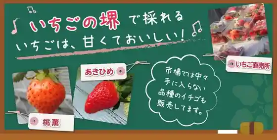
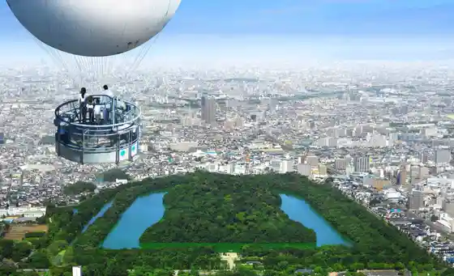
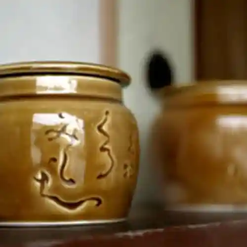
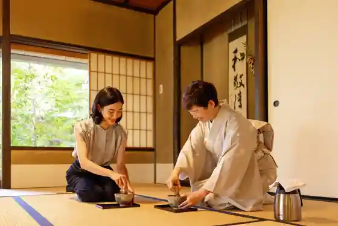

Ichigo no Sakai
Sakai, Osaka · 090-3275-4115 · Official / source link

Osaka Sakai Barun
Sakai, Osaka · Official / source link

Kan Fukuro
Sakai, Osaka · 072-233-1218 · Official / source link

Sakai Ri Aki no Mori
Sakai, Osaka · 072-260-4386 · Official / source link

Konpeito Museum Sakai
Sakai, Osaka · 072-282-2790 · Official / source link
Zabieru Park
Sakai, Osaka · Official / source link
Shima no Jitensha Museum
Sakai, Osaka · 072-221-3196 · Official / source link
Sofia Sakai (Sakai Kyoiku Bunka Center) Puranetariumu Sen no Yume Kirameku Sakai Hoshizora Kan
Sakai, Osaka · 072-270-8110 · Official / source link
Feniiche Sakai (Sakai Mingei Jutsu Bunka Horu)
Sakai, Osaka · 072-223-1000 · Official / source link
Nintoku Tenno Ryo Burial Mound (Daisen Ryo Burial Mound)
Sakai, Osaka · 072-241-0002 · Official / source link
Nanshu Tera
Sakai, Osaka · 072-232-1654 · Official / source link
Doto
Sakai, Osaka · Official / source link
Sakai Arufonsu Myusha Kan
Sakai, Osaka · 072-222-5533 · Official / source link
Sakai Midori no Museum Habesuto no Oka
Sakai, Osaka · 072-2966-9911 · Official / source link
Sakai Den Takumi Kan
Sakai, Osaka · 072-227-1001 · Official / source link
Sakai Museum
Sakai, Osaka · 072-245-6201 · Official / source link
Sakai Yakusho 21 Kai Tembo Robii
Sakai, Osaka · 072-228-7493 · Official / source link
Sakai Gyoren Toretore City
Sakai, Osaka · 072-221-7272 · Official / source link
Sakai Ritsu Bigguban
Sakai, Osaka · 072-294-0999 · Official / source link
Sakai Chashitsu Shin Iori Obai Iori
Sakai, Osaka · 072-247-1447 · Official / source link
Sakai Higashi Tourist Information
Sakai, Osaka · 072-238-7174 · Official / source link
Sakai Senko (Ume Sakae Do Shorumu)
Sakai, Osaka · 072-229-4545 · Official / source link
Sakai Eki Tourist Information
Sakai, Osaka · 072-232-0331 · Official / source link
Taji Soku Hime Shrine
Sakai, Osaka · 072-297-0726 · Official / source link
Daisen Park
Sakai, Osaka · 072-241-0291 · Official / source link
Daisen Park Nippon Garden
Sakai, Osaka · 072-247-3670 · Official / source link
Daisen Koen Tourist Information
Sakai, Osaka · 072-245-6207 · Official / source link
Taian Tera
Sakai, Osaka · Official / source link
Taiho Yama Houn Zendera (Houn Tera)
Sakai, Osaka · 072-361-4419 · Official / source link
Oizumi Ryokuchi
Sakai, Osaka · 072-259-0316 · Official / source link
Ohama Park
Sakai, Osaka · 072-232-1489 · Official / source link
Otori Taisha
Sakai, Osaka · 072-262-0040 · Official / source link
Yamaguchi Ie House
Sakai, Osaka · 072-224-1155 · Official / source link
Katatagae Shrine
Sakai, Osaka · 072-232-1216 · Official / source link
Kyu Sakai Todai
Sakai, Osaka · 072-228-7198 · Official / source link
Honganji Sakai Betsuin
Sakai, Osaka · 072-232-4417 · Official / source link
Sakurai Shrine
Sakai, Osaka · 072-297-0043 · Official / source link
Hodo Tera
Sakai, Osaka · 072-297-0705 · Official / source link
Hamadera Park
Sakai, Osaka · 072-261-0936 · Official / source link
Hamadera Koen Bara Garden
Sakai, Osaka · 072-261-0936 · Official / source link
Hamadera Koen Kyueki Sha
Sakai, Osaka · 072-261-0033 · Official / source link
Kiyoshi Gakuin
Sakai, Osaka · 072-228-1501 · Official / source link
Shirasagi Park Hanashobu Sono
Sakai, Osaka · 072-276-6818 · Official / source link
Mozu Hachiman Shrine
Sakai, Osaka · 072-252-1089 · Official / source link
Mozu Kofun Gun
Sakai, Osaka · Official / source link
Shoun Tera
Sakai, Osaka · 072-232-2131 · Official / source link
Sugawara Shrine
Sakai, Osaka · 072-232-2450 · Official / source link
Sugo Shrine
Sakai, Osaka · 072-361-0323 · Official / source link
Hagiwara Tenjin (Hagiwara Shrine)
Sakai, Osaka · 072-285-0295 · Official / source link
Tourist Farm Minami Rakuen
Sakai, Osaka · 072-298-5037 · Official / source link
Teppo Kaji Residence
Sakai, Osaka · 072-228-1501 · Official / source link
Kaiko Shrine
Sakai, Osaka · 072-221-0171 · Official / source link
Kaiko Shrine Miko Experience
Sakai, Osaka · Official / source link
Takabayashi Ie House
Sakai, Osaka · Official / source link
Kurohime Yama Burial Mound
Sakai, Osaka · 072-362-2737 · Official / source link